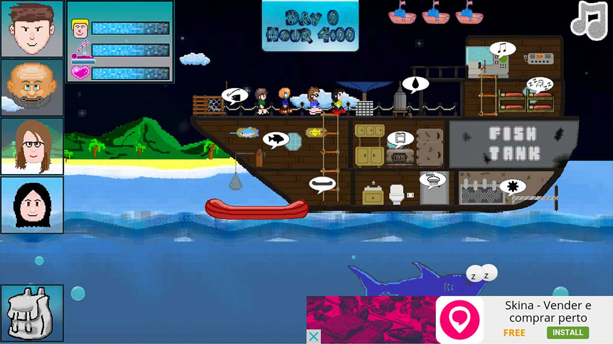

Este é o décimo postmortem publicado aqui no blog. Fiquei muito feliz com este projeto em especial pois, diferente dos demais que entraram em contato depois do projeto estar pronto, o João Paulo comentou sobre este jogo em alguns posts do blog. É muito legal ver um leitor do blog (e sua equipe) desenvolvendo e publicando um jogo, e ainda mais contando a história do desenvolvimento aqui para encorajar outros desenvolvedores a publicar seus jogos.
Olá, meu nome é João Paulo Santos e sou um dos programadores do jogo HueShark que está 100% gratuito e pronto para download na GooglePlay no link acima. Abaixo irei especificar tudo que ocorreu durante todo o desenvolvimento, as nuances e mostrar o que realmente é positivo e negativo no desenvolvimento de um jogo de pequeno porte como HueShark.

Descrição do Game
HueShark conta a história de 2 casais (Pai, Mãe, Filho e Nora) que ganham uma viagem da empresa a qual prestam serviços por serem excelentes funcionários. Todos são especializados em engenharia e conhecem muito de mecânica e tecnologia. Ao irem com um Iate para o mar (Iate locado pela empresa) eles sofrem com as intemperanças do mar, em meio a viagem uma forte tempestade atinge o Iate que eles estão e eles são levados pela correnteza forte. O navio acaba parando em uma ilha deserta, tendo seu motor e parte elétrica destruídos.
O grupo pensa em como sobreviver e como voltarem para casa e a saída para isto era colocar um navio pesqueiro que também estava na ilha ancorado bem próximo a ilha e tentar consertar o motor/rádio deste barco novo que acharam na ilha para funcionar e assim serem recuperados ou irem para casa. Misteriosamente o barco pesqueiro tinha alguns esqueletos e marcas de "chifradas" no casco.
Apesar de ainda estar em bom estado gerou curiosidade aos tripulantes que com esforço conseguiram levar o barco para bem próximo da ilha e ancora-lo ali mesmo. A ideia deles era ir a ilha sempre que possível em um bote para pegar alimento e procurar suprimentos para ajudar o grupo a sobreviver.
Abaixo segue uma descrição InGame:
Um jogo desafiador que faz com que o player tenha total atenção com o status de cada player e com a bag com recursos do navio. Cuide da Nutrição, Humor e Cansaço de cada personagem para evitar que eles trabalhem com penalidades na movimentação e tempo de cumprimento de tarefas.
Pesque, crie armadilha para o HueShark, mantenha o tanque de peixe sempre cheio para evitar danos ao navio.
Chuvas ocorrem continuamente para renovar a reserva de água do barco.
Tente "fisgar" gaivotas para criar armadilhas para o tubarão (sim, gaivotas + vidro + putrefação = dor de barriga no HueShark).
Existem 3 formas de vencer:
1 - Gaste o máximo de suprimentos (supplies) no motor e você vencerá o game indo para casa com o motor novo;
2 - Gaste o máximo de suprimentos (supplies) no rádio e você vencerá o game sendo resgatado por um helicóptero da marinha;
3 - Vá o máximo de vezes possíveis para ilha e use o sinalizador para atrair a guarda costeira e você será salvo por um helicóptero da marinha.
Obrigado por apreciar nosso jogo, ele é FREE e é uma honra para nós compartilharmos o nosso esforço com vocês.
Início
O game antes mesmo de ser desenvolvido foi pensado no público de smartphones Android. Pensamos no Gdd entre o final de junho de 2015 e o começo de julho 2015 e juntamos 4 pessoas neste projeto inicialmente (tinha por data final de entrega 7 de dezembro de 2015), ressaltando que era um projeto de Universidade (Projeto Integrador).
O Gdd foi idealizado em 1 dia, tendo quase tudo o que o projeto final tinha em seu documento original (poucas coisas mudaram). Abaixo irei especificar coisas técnicas, pontos positivos e pontos negativos.
Especificações Técnicas do Projeto
Engine: Nenhuma, usamos AS3 + Flash Builder + Starling + GreenSock (AS3).
Plataforma: Android
Estilo de Jogo: Survivor Comic
Jogabilidade: Point and Click
Ferramenta para Gráficos: Photoshop CC 2015
Animação: Photoshop CC 2015 (frames animados via código)
Estilo: PixelArt
Controle de Versão: Git (BitBucket) + Sourcetree + DropBox
Técnica para Gestão: Scrum + Trello
Pontos Negativos
Aqui é aonde moram os perigos de qualquer projeto. Vamos dividir por partes:
1 – Procure pessoas que realmente estão motivadas
É muito fácil ouvir “estou contigo”, “contigo comigo para o que der e vier” e coisas do gênero quando se está em um mercado tão variável e tão lucrativo como o de game design. Porém, quando é hora de arregaçar às mangas e trabalhar de verdade pouco percebe-se de tal entrega por parte de alguns. Provavelmente o principal motivo disto foi a não identificação com o projeto ou com a área do projeto. É como pensar na Blizzard, imagine que eu como programador fosse trabalhar na área de rigging ou modelagem, além de ser um desastre para companhia provavelmente seria um ponto de desmotivação para mim. Certifique-se de que quem vai entrar no projeto com você realmente quer fazer e está disposto a quase tudo para ver o release do game oficial acontecer. 1 Erro na conta do projeto!
2 – Certifique-se que todos estão na área correta
No final do semestre 2 membros do grupo (éramos 4) saíram do projeto, mas apenas no final foi deixado claro que ambos não estavam na área que queriam, a saber desenho (pixel art).
Lembro-me bem do primeiro dia quando sentamos juntos e estabelecemos o que cada um faria, ou seja, 2 programadores e 2 designers, todavia recebemos bastante elogio na parte de código (não por sermos revolucionários, mas por termos produzido muito em pouco tempo), mas na parte visual não recebemos honrarias. Antes de começar qualquer projeto estripe todos os componentes para saber se realmente é aquela área que ele atuará que será sua “paixão no projeto”. Mais 1 Erro na conta do projeto!
3 – Motive o tempo todo, mas tenha parcimônia em poupar exclusões
Esse é um ponto grave de qualquer projeto que se não houver cautela ou falta de pulso seu projeto afunda! Veja bem, imagine o caso aonde uma pessoa não está produzindo (produzir != volume de coisas entregues, na verdade é qualidade) o proposto por ela mesma na semana/dia, se a resposta é NÃO avalie TODAS as coisas do ambiente ao qual ela faz parte (saúde dela/de familiares, emprego ameaçado, relacionamento acabado e etc), se realmente há algo grave ocorrendo respeite-a, mas se não há nada grave/desmotivador fora do projeto ocorrendo e o integrante não cumpre os backlogs propostos por ele mesmo está na hora de reavaliar o componente e se através de reuniões/diálogos privados e outras coisas não houver desprendimento mande um kick e assuma a função, é melhor fazer o seu melhor a não fazer NADA (mesmo que você não seja bom naquela área). Por causa desta falha de tolerar demais tivemos severos problemas com o cronograma assim como resultado negativo, 2 kicks. +1 Erro na conta do projeto!
4 – Tenha todos componentes com capacidade ou motivação extrema em sua área
Esse ponto é importante, pense comigo, você não vai achar o programador do Diablo 3 disponível para um projeto indie, vai? Claro que não, mas também não é aceitável um cara que ainda está estudando como se comenta múltiplas linhas em C# na Unity fazer parte de um projeto como programador (pelo menos com tempo de entrega cravado e não mutável). A coisa gira em torno disto, procure pessoas que conhecem do assunto (não precisa ser expert) e se tal pessoa não puder cumprir algo complexo na área dela dê tempo, uma pessoa motivada produz muito (e o bom é que ocorre um aprendizado forte). Colocar pessoas porque são “amigos, chegados, parceirões” é FURADA, corra! +1 Erro na conta do projeto!
Pontos bem positivos
1 - O verdadeiro líder
Como um mero aprendiz de liderança fui colocado como cabeça do projeto e isto me colocou uma responsabilidade de 1 tonelada nas costas. Como programador do projeto (também) decidi que a melhor forma de cobrar era fazer, ou seja, programar o máximo de linhas possíveis no menor tempo possível para poder mostrar um “olha caras, minha parte fiz bacana por isso estou pedindo que façam as suas partes” com cabeça fria e tranquila. Isso se mostrou mais que positivo, percebi que gera frutos (para componentes interessados no projeto), todos se sentem devedores de “entregar coisas” no projeto ao verem 1 componente fazendo isto. Lembro-me de “competir” com o outro programador quando fazíamos algoritmos bem legais para sanar problemas e ficávamos zoando um do outro no projeto para ver que fazia algo mais bem elaborado e isso gerou mais qualidade no projeto (perdi na maior parte das vezes kkkkkkk)...
2 – Redescobrindo seus limites
Uma das coisas mais legais que ocorreram foi chegar além do meu limite físico. Lembro-me que para cumprir um backlog precisei varar 3 dias e meu corpo já não aguentava mais e o new metal + cafeína + energético sustentaram juntamente com a motivação de maneira louvável os meus sentimentos e persistência. Uma das coisas mais legais que você descobre em um projeto com cronograma a ser seguido é que seus limites podem ser rompidos e positivamente ampliados. Cheguei a adoecer em detrimento disto, mas valeu a pena, ganhei o respeito de alguns da sala e da universidade que tomaram conhecimento do esforço dos programadores envolvidos no projeto.
3 – Achar motivação aonde não tem
Se não há dinheiro em jogo (projeto acadêmico), como fazer algo dando o melhor de si? Aí foi o bacana da história, pensar em superar a si mesmo e competir consigo mesmo tornam esse ponto uma resposta clara, Ultrapasse VOCÊ MESMO! Pise em você mesmo! Humilhe você mesmo por resultados melhores e você mesmo terá um crescimento forte!
4 – Quem está na chuva é para se molhar!
Quando houveram os kicks em detrimento do desinteresse/descumprimento de “Brothers” pensamos (os 2 devs): O que iremos fazer sem designers? Como vamos codar e desenhar? E a resposta foi: Vamos romper nossos limites, se for necessário não dormiremos mais! Temos data certa para encerrar este sofrimento ← Esse ponto é o legal porque aqui abre o leque para se romper limites, tenho até o momento os psds com históricos de edições pixel a pixel assim como o outro programador, aonde superamos a nós mesmos! Supere a si mesmo e se houver algum acomodado tome a frente, não deixe o barco afundar porque não há gente que leva a sério seu trabalho ou simplesmente pulou do barco, META A MÃO E FAÇA!
Considerações finais
Integrantes no início: 4 (2 devs/2 designers),
Integrantes no fim: 2 (2 devs),
Cronograma e Conclusão estimada: 5 meses,
Conclusão do projeto: 8 meses,
Rendimento estimado da matéria: 100%,
Rendimento alcançado na matéria: 100%.
Agradecimentos
Quero agradecer ao portal gamedeveloper.com.br por ceder este espaço, é uma honra estar aqui postando meu primeiro game oficial e espero repetir este processo de post-mortem mais vezes, será mais que uma honra para mim. Obrigado, Bruno, você é Show!
Quero também agradecer a Deus que em 10 dias me possibilitou o aprendizado de um framework tão formidável como o Starling.